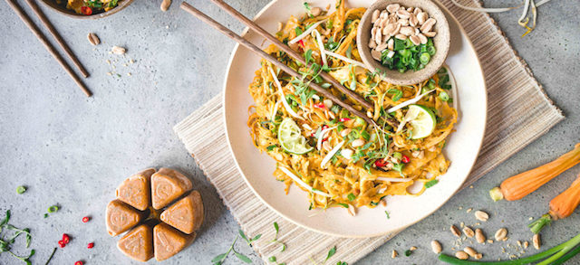

Pad Thai Recipe

My delicious Pad Thai recipe
This meal will hit all of the right taste buds. It is am iconic dish hailing from Thailand, and what better way to fill your belly on a cold winter's night than the warm chilli heat of a Pad Thai
Please find the ingredients and cooking instructions listed below. If you loved the recipe, please let me know!
Ingredients
- 125g Thai dried rice sticks
- Pad Thai pre bought sauce
- 2 to 3 tbsp vegetable or canola oil
- 1/2 onion
- 2 garlic cloves
- 150 g/5oz chicken breast (or thigh)
- 2 eggs
- 1 1/2 cups of beansprouts
- 1/2 cup firm tofu, cut into 3cm
- 1/4 cup garlic chives , cut into 3cm
- 1/4 cup finely chopped peanuts
Instructions
- Place noodles in a large bowl, pour over plenty of boiling water. Soak for 5 minutes, then drain in a colander and quickly rinse under cold water.
- Mix Sauce in small bowl.
- Heat 2 tbsp oil in a large non stick pan (or well seasoned skillet) over high heat. Add garlic and onion, cook for 30 seconds.
- Add chicken and cook for 1 1/2 minutes until mostly cooked through.
- Push to one side of the pan, pour egg in on the other side. Scramble using the wooden spoon
- Add bean sprouts, tofu, noodles then Sauce.
- Toss gently for about 1 1/2 minutes until Sauce is absorbed by the noodles.
- dd garlic chives and half the peanuts. Toss through quickly then remove from heat.
- Serve immediately